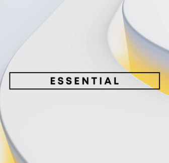
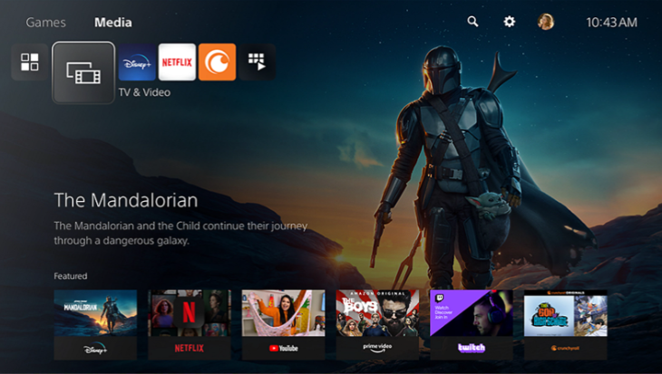

Juegos
Software
Servicios
Noticias
Tienda
Asistencia

PlayStation Network
Juego online, entretenimiento, amigos, compras y mucho más:
PSN es donde comienza tu recorrido online.
Inicia sesión en tu cuenta
de PSN
Inicia sesion en PlayStation.com con los datos de tu cuenta de
PSN para ver ofertas adaptadas a ti, comprobar el estado de tu
PS Stars, gestionar la configuración de tu cuenta y mucho más.
¿No tienes cuenta? Haz clic en el botón de abajo para comenzar
con una cuenta de PSN.
Conéctate a nuestro mundo online
Inicia sesión en PlayStation Network para disfrutar de experiencias de juego y
entretenimiento increíbles en tu consola PlayStation y otros dispositivos conectados
PlayStationTM Store
La biblioteca más grande de juegos de PlayStation del
mundo.

PlayStation® Plus*
Accede a catálogos de cientos de juegos,pruebas con
límite de tiempo, multijugador online, descuentos
exclusivos para miembros y mucho más, con una selección
de tres opciones de suscripción.*
* Las tarifas de suscripción a PlayStation Plus son recurrentes hasta su cancelación. Se aplican restricciones de edad. Términos
completos: www.playstation.com/legal/ps-plus-usage-terms. La cantidad y la disponibilidad de los títulos de la colección de PlayStation Plus pueden variar
según el país. Consulta playstation.com/psplus para obtener detalles y actualizaciones sobre las ofertas de PS Plus.
Comprueba el estado de la red
En caso de que tengas problemas de conexión, mira si hay algún
mantenimiento planeado para PSN que pueda desconectarte
durante un breve periodo de tiempo y asegúrate de que todos
los servicios están operativos.
Mira los nuevos lanzamientos y
descuentos
en PlayStation Store
Compra los últimos juegos, complementos y mucho más en la biblioteca de contenido
de PlayStation más grande del mundo.


Explora la PlayStation Store desde tu consola,
smartphone o navegador web y descubre un tesoro
oculto de juegos — desde éxitos de triple A a joyas
independientes — así como complementos y pases de
temporada. Con ventas regulares, promociones y
ahorros adicionales para los miembros de PlayStation
Plus, siempre te espera una aventura más.
CONQUISTA EL MUNDO
CON PLAYSTATION PLUS
Descubre tu próxima gran aventura con los nuevos catálogos de cientos de juegos actuales y clásicos, pruebas con límite de tiempo, multijugador online, descuentos exclusivos para miembros y mucho más, con una selección de tres nuevas opciones de suscripción. *
PlayStation Plus
Premium
Disfruta de todos los beneficios principales de PlayStation Plus,
cientos de juegos del catálogo de
juegos, además de beneficios
prémium como pruebas de juegos, streaming en la nube y el catálogo
de clásicos.
El streaming en la nube requiere una velocidad mínima de
Internet de 5 Mbps (15 Mbps para 1080p)

PlayStation Plus Extra
Todas las características de
PlayStation Plus Essential, con
acceso adicional a una increíble
colección de juegos.

PlayStation Plus
Essential
Juegos nuevos cada mes,
multijugador online, descuento s
exclusivos en PS Store y más
, disponibles en cualquiera de los
tres planes de suscripción de
PlayStation Plus.
*Los juegos clásicos y las pruebas de juego solo están disponibles para los suscriptores Deluxe. La biblioteca de juegos varía con el tiempo y el nivel. PlayStation Plus está sujeto a una tarifa recurrente por suscripción que se cobra automáticamente hasta su cancelación. Se aplican términos:play.st/psplus-usageterms
Servicios de entretenimiento
Transmite entretenimiento 4K sin esfuerzo desde tus aplicaciones favoritas y mira discos
Blu-ray™ 4K (PS5 edición digital no reproduce discos).

Encontrarás los mejores y más importantes servicios de emisiones gratuitos y
de pago en un lugar, así que nunca te perderás los shows de los que hablan
tus amigos.
Es posible que los servicios de transmisión requieran una suscripción pagada. Es posible que el
contenido mostrado no esté disponible en todos los países. También se requiere conexión a Internet y
una cuenta para PlayStation™Network.
Unete a Play Station Plus y ganarás puntos PlayStation
Stars con cada compra seleccionada en PlayStation
Store*.
Canjea estos puntos por fondos de la cartera de
PlayStation Network para
utilizarlos en tu próxima
compra digital en PlayStation Store.
*Se requiere una cuenta de adulto para PlayStation Network en el
país/región donde esté disponible PlayStation Stars. Se aplican los
términos
Seguridad online, seguridad
de la cuenta y privacidad
Descubre cómo PlayStation se esfuerza por crear
espacios online seguros donde todos son bienvendios a
jugar.

Inicio >> PlayStation®Network
| Acerca de | Productos | Valores | Servicio técnicos | Recursos | Conectar |
|---|---|---|---|---|---|
| Acerca de SIE | PS5 | MedioAmbiente | Centro de asistencias | Términos de servicio de PSN | |
| Carreras | PS4 | Accesibilidad | Seguridad en PlayStation | Politica dde cancelación de PS Store |
App iOS |
| PlayStation Studios | PS VR2 | Seguridad online | Estado PSN | Clasificación por edad | App Android |
| Empresa | PS Plus | Diversidad,igualdad e inclusión | Reparaciones de PlayStation | Aviso sobre la salud | |
| Accesorios | Restauracion de contraseña | Desarrolladores | |||
| Juegos | Manuales |
© 2023 Sony Interactive Entertainment LLC
Todos los contenidos, títulos de juegos, nombres y/o imágenes comerciales, marcas comerciales, arte e imágenes asociadas son marcas comerciales y/o material con derechos de autor de sus propietarios respectivos.Todos los derechos reservados. Más información
Legal | Política de privacidad | Términos de uso del sitio web | Mapa del sitio